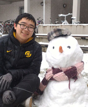

|  | Fanyou Wu 吴凡优 Graduate Research Assistant |
I am Fanyou Wu, currently a Ph.D. candidate at Purdue University from the Forestry and Natural Resources Department. Before attending Purdue, I received my master degree from University of Eastern Finland (2018) and bachelor degree from Nanjing Forestry University (2015) both in Wood Material Science. I was also an exchange student in the University of British Columbia (2013). Now my research focuses on applying machine learning to forest-related problems e.g., wood identication through image recognization.
Attending machine learning related competitions is my side interesting, and I have won many championships and runners-up in machine learning related competitions and top conference competation like KDD/IJCAI/Neurips etc. Now I am ranking 11th in Tianchi Competition Platform held by Alibaba Company with nickname 铁球.
Now, I am seeking a Postdoc Position or Research Fellowship for Machine Learning applications in various fields. I will graduate soon in Spring or Summer in 2021.
Liu, L., Wu, F., Lyu, C., Liu, Z., & Ye, J. (2020). Learning to Reposition on an Online Taxi-hailing Platform
Based on our KDD CUP 2020 solution, submitted to IEEE Transactions on Intelligent Transportation Systems, under review
Liu, L., Wu, F., Lyu, C., Liu, X., & Liu, Z. (2020). Behavior2vector: embedding users' personalized travel behavior to vector (Submitted to IEEE Transactions on Intelligent Transportation Systems, under review)
Submitted to IEEE Transactions on Intelligent Transportation Systems, under review
Wu, F., Gazo, R., Benes, B, & Haviarova, E. (2020). Deep BarkID - A Portable Tree Identification System by Knowledge Distillation and Network Pruning
Submitted to computers and electronics in agriculture, under review
Wu, F., Gazo, R., Haviarova, E., & Benes, B. (2020). Wood Identification Based on Longitudinal Section Images by Using Deep Learning.
Submitted to wood science and technology, under second round review
Wu, F., Gazo, R., Haviarova, E., & Benes, B. (2019). Efficient Project Gradient Descent for Ensemble Adversarial Attack. arXiv preprint arXiv:1906.03333, IJCAI 19 AIBS workshop.
Wu, F., & Kärenlampi, P. P. (2017). Phase transition in a growing network. Journal of Complex Networks, 6(5), 788-799.
2nd, 5000 USD, solution
KDD CUP 2020 Reinforcement Learning Competition Track (RL Track)
1st in Reposition Track, 8000 USD, solution
1st in Traget Attack Track, 5000 USD, solution
KDD CUP 2019 Regular Machine Learning Competition Track (Regular ML Track)
4th, 1000 USD
JDD-2018 Global Digitalization Challenge (Population dynamics census and prediction track)
2nd in the final, 1st in the NA region, ~23000 USD
Alibaba Cloud's 3rd Annual Security Algorithm Challenge (2018)
8th, ~1500 USD
Alibaba Cloud's 2nd Annual Security Algorithm Challenge (2017)
1st in the final, overall ~6th, ~1500 USD
2nd, ~7600 USD